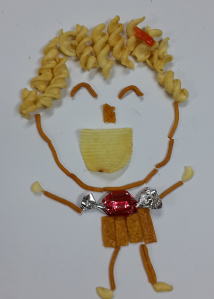

초등학교 6학년 아동은 대체로 11~12세에 해당하는데, 이 시기는 신체적, 사회적, 정서적으로 급격한 변화가 일어나는 시기이다. 이 단계의 아동은 학교생활과 또래 관계에서 다양한 도전과 기회를 경험하게 된다. 이러한 초등 6학년 아동의 신체적, 사회적, 정서적 특성을 구체적으로 살펴보면 다음과 같다.
1. 신체적 특징
초등 6학년 아동은 성장이 지속적으로 가속화되며, 사춘기 단계에 접어들 수 있다. 남아들은 고환과 음경의 성장, 목소리 변화, 신체의 성적 발달 등이 나타난다. 여아들은 유방 발달과 초경이 나타나기 시작한다. 이 시기에는 제2성징 발달로써 성장 속도가 빨라져 여아들이 남아들보다 먼저 성장통을 겪는다. 여아들은 신체적 변화에 대한 인식이 증가하고, 이로 인한 자기 의식 또한 높아질 수 있다. 남아들은 보통 여아들보다 늦게 사춘기에 도달하면서 사춘기를 겪는다. 초등 6학년 아들들은 저학년 시기보다 신체운동 능력의 증가에 의한 대근육과 소근육의 발달로 체육 활동이나 미술과 같은 세밀한 작업에서 나신의 재능을 호라발하게 발휘하거나 좀 더 나은 성과를 나타내기도 한다.
2. 사회적 특징
초등 6학년 아동은 또래들과의 상호작용과 평가를 통해 사회적 기술, 자아 개념, 학교 적응에 큰 영향을 미친다. 이에 사회적 소속감과 인정을 받고 싶어하는 욕구가 강해진다. 학교나 학원 등 집단에서의 자신의 역할를 민감하게 여긴다. 이 때문에 집단 내에서 리더십을 발휘하려는 특징을 나타내거나, 특정 집단에 속하고자 하는 욕구가 강해질 수 있다. 또한 자신을 또래 아동들과 학업 성취, 운동 능력, 인기 등 다양한 측면에서 비교하기도 한다. 경쟁심이 강한 성격일 경우, 자신의 사회적 역할 및 대인관계에서 갈등과 고민이 증가하여 문제를 야기시키기도 한다.

3. 정서적 특징
자아정체감의 탐색하는 6학년 시기는 자신이 누구인지, 어떤 사람이 되고 싶은지에 대한 고민하거나 때로는 불안정한 정서 상태로 이어질 수 있다. 이는 자신의 신체적, 사회적 인지에 의한 정서적 변화 인식이 증가한다. 이로써 자신감이 커지거나, 반대로 불안과 자기 의심을 경험할 수도 있다. 특히, 부모나 보호자로부터의 독립을 추구하며 자신만의 정체성을 형성하려는 과정에서 부모 및 가족들과 갈등이 여러 가지 발생할 수 있다. 따라서 이 시기 아동은 친구와의 관계, 학업 성취, 가족 문제 등 다양한 외부 요인이 정서에 큰 영향을 미칠 경우 감정의 기복이 심해져 스스로 제어하는 데 어려움을 겪을 수도 있다.
이와 같이 초등 6학년 아동들은 자신의 신체적, 사회적, 정서적 변화를 이해하고 긍정적으로 수용하는 데 개인적 차이에 따른 지원과 도움이 필요하다. 부모, 교사, 상담 전문가 등 성인의 역할은 초등 6학년 아동의 이러한 변화를 스스로 자신의 감정과 행동을 이해하고 관리하는 데 필요한 기술을 파악해야 한다. 더불어 가정과 학교 그리고 지역사회와 함께 아동이 건강하고 올바르게 성장하도록 기여해야 할 것이다.
2022.05.17 - [이론] - 반두라의 발달이론 - 사회적 관계를 위한 모방학습
반두라의 발달이론 - 사회적 관계를 위한 모방학습
인간의 모든 행동은 관찰이나 모방을 통한 학습 인간이 어떤 행동을 학습하는 데 있어서 외부로부터의 자극뿐 만 아니라 인간 내부의 인지적 요인이 함께 작용하여 학습이 진행된다는 것이다.
think-sis.co.kr